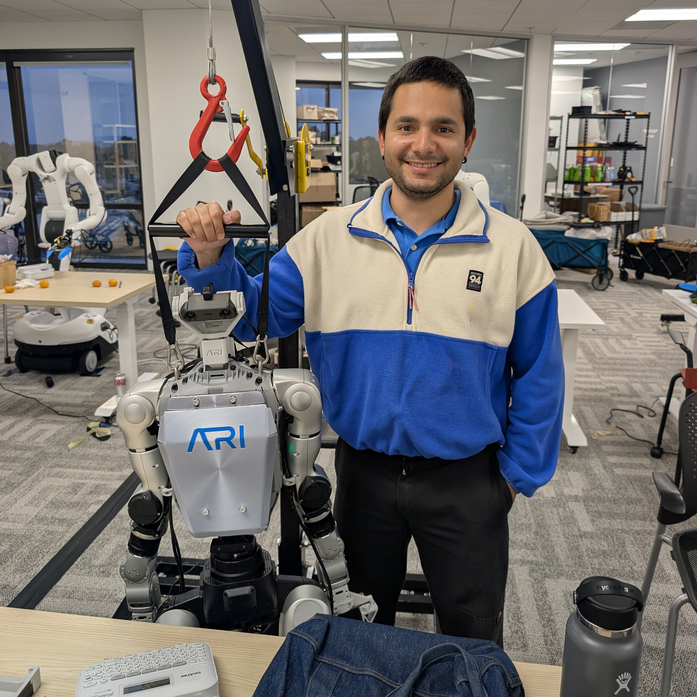
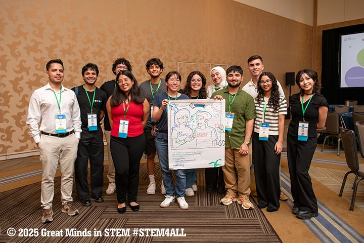

• Executed data collection, labeling, and validation tasks using humanoid robotic systems to support machine learning model development.
• Configured and deployed robotic systems using Linux command-line tools to support testing and daily operations.
• Operated robots for control, testing, and real-time data collection workflows.
• Communicated technical issues and process improvement opportunities with cross-functional teams.

• Organizing and facilitating workshops, info sessions, and events to connect students with academic, research, and professional development opportunities.
• Supporting recruitment and retention initiatives to increase underrepresented participation in computer science and STEM fields.
• Contributing to building a supportive community that encourages student persistence in computing disciplines.

Successfully navigated the complexities of the Eclipse SWT repository, leading to significant contributions and skill development.
• Resolved issue #1599, improving the documentation of the software.
• Enhanced my technical skills in Eclipse IDE and external dependencies, boosting my software engineering capabilities.
• Fostered effective communication with project maintainers, mentors, and staff, strengthening my teamwork and collaboration skills.
Contributed to enhancing Storybook’s Test Panel and improving project workflows during my internship.
• Learned a new technology stack including Typescript and Vite.
• Developed proficiency in TypeScript and Git workflows.
• Actively participated in resolving issue #30536 on GitHub, showcasing my problem-solving skills.